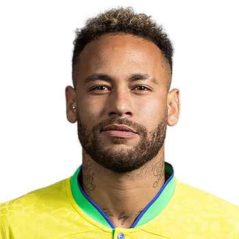
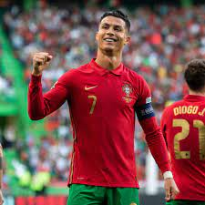
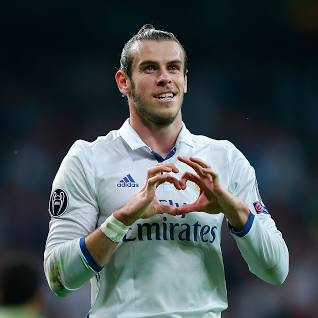

| S.NO |
PICTURE |
LINK |
DISCRIPTION |
| 1 |

|
LIONAL MESSI |
Lionel Andrés Messi also known as Leo Messi, is an Argentine professional footballer who plays as a
forward for Ligue 1 club Paris Saint-Germain |
| 2 |

|
NEYMAR JR |
Neymar da Silva Santos Júnior, known as Neymar, is a Brazilian professional footballer who plays as
a forward for Ligue 1 club Paris Saint-Germain and the Brazil national team. one of the most
skillfull player in current time |
| 3 |

|
C.RONALDO |
Cristiano Ronaldo dos Santos Aveiro GOIH ComM is a Portuguese professional footballer who plays as a
forward for and captains both Saudi Professional League club Al Nassr and the Portugal national team
|
| 4 |

|
Z.IBRAHIMOVIC |
Zlatan Ibrahimović is a Swedish professional footballer who plays as a striker for Serie A club AC
Milan and the Sweden national team. Ibrahimović is renowned for his acrobatic strikes and volleys,
powerful long-range shots, and excellent technique and ball control |
| 5 |

|
G.BALE |
Gareth Frank Bale MBE is a Welsh former professional footballer who played as a winger, most notably
for Tottenham Hotspur and Real Madrid. Renowned for his pace, he is widely regarded as one of the
greatest players of his generation and one of the greatest Welsh players of all time |
| 4 |
|
K.BENZEMA |
Karim Mostafa Benzema is a French professional footballer who plays as a striker for and captains La
Liga club Real Madrid. A creative and prolific forward, Benzema is regarded as one of the best
strikers of all time. He is Real Madrid's all-time second-highest goalscorer and top assist provider
|
{kind=link}
{kind=link}
{kind=link}
{kind=link}